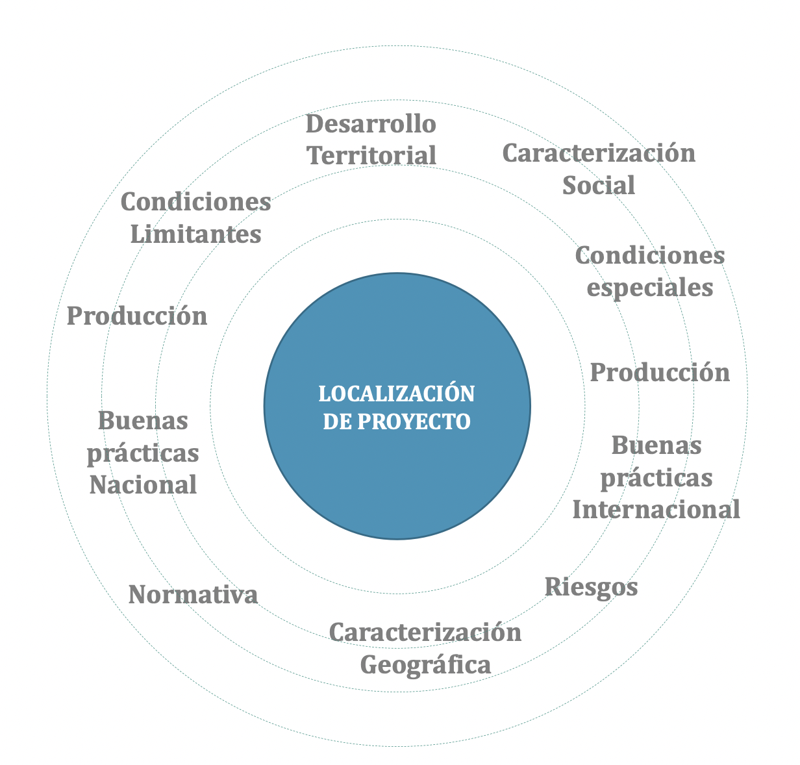

2 Proyecto Generadoras
A mode general se dará un contexto de los objetivos y etapas del proyecto que general el presente estudio que lleva por título “Desarrollo de estándares para un desarrollo más sostenible” solicitado por Generadoras Chile. Este proyecto cuenta con dos etapas generales, y es en la primera de ellas se enmarca el desarrollo del presente documento de análisis multicriterio territorial, a continuación describen las etapas generales.
Etapa 1: Desarrollo de estándares para la localización de proyectos de generación eléctrica
Etapa 2: Desarrollo de estándares para la incidencia en etapas de diseño de proyectos de generación eléctrica
2.1 Etapa 1: Desarrollo de estándares para la localización de proyectos de generación eléctrica
Actividad 1: Análisis de aspectos asociados a la localización de proyectos
- Caracterización social y geográfica del territorio por medio de la Matriz de Bienestar Humano Territorial (MBHT)
- Levantamiento de brechas de desarrollo territorial
- Levantamiento de oferta laboral y productiva del territorio
- Tendencias de desarrollo comunal o de sectores asociados al emplazamiento del terreno
- Levantamiento de condiciones especiales y limitaciones del territorio (zonas de protección, pueblos originarios, conflictos socioambientales)
- Levantamiento de riesgos asociados a localización
- Levantamiento de las condiciones normativas actualmente aplicables al terreno.
- Levantamiento de buenas practicas entorno al desarrollo de proyectos de generación eléctrica nacional e internacional.
Actividad 2: Análisis multicriterio territorial (da origen al presente documento)
Metodología para afrontar problemas de toma de decisiones en los que varios los objetivos o criterios deben cubrirse simultáneamente y ponderarlo según necesidades particulares.

En base a la actividad 1, se establecerán las ponderaciones de cada criterio consensuado asociado a la localización de terrenos de acuerdo a:
- Asignación de pesos que establezcan las primeras ponderaciones y escenarios de localización.
- Mesa de conversación de prioridades con los actores locales relevantes, expertos y empresas que conviven en el territorio para desarrollar una re asignación de ponderaciones y así ara corroborar los escenarios de localización y/o generar nuevos escenarios de localización
- Calibración de ponderaciones de acuerdo a la sensibilidad de los criterios definidos en las actividades anteriores se termina de afinar la definición de los escenarios de localización para proyectos de generación eléctrica.
- Propuesta de escenarios de localización de proyectos de generación eléctrica.

2.2 Etapa 2: Desarrollo de estándares para la incidencia en etapas de diseño de proyectos de generación eléctrica
Actividad 1: Análisis e identificación de diseño de proyectos de generación eléctrica
- Identificación de diseños de proyectos implementados a escala nacional e internacional de buenas practicas participativas.
- Levantamiento de líneas de compensación socio ambientales en las Resolución de Calificación Ambiental (RCA) en Chile.
- Identificación y localización de impactos, mitigación y conflictos socio ambientales de proyectos de generación eléctrica en el territorio.
- Levantamiento de las condiciones normativas actualmente aplicables entorno a proyectos de generación eléctrica.
- Levantamiento de buenas prácticas implementadas entorno al diseño de proyectos de generación eléctrica nacional como internacional.
- Identificación de actores clave entorno al diseño de proyectos de generación eléctrica.
Actividad 2: Caracterización territorial de los territorios de interés de la región piloto
- Levantamiento de actores locales en los territorios.
- Tendencias de desarrollo comunal o de sectores asociados al emplazamiento de proyectos.
- Levantamiento de condiciones especiales y limitaciones del territorio (p.e. zonas de protección, pueblos originarios, conflictos socio ambientales, entre otros).
- Levantamiento de Brechas de desarrollo territorial mediante la simulación de escenarios de compensaciones de proyectos con la Matriz de Bienestar Humano Territorial (MBHT).
Actividad 3: Determinación de estándares para un diseño de proyectos participativos y de diálogo temprano
Se establecerá el diseño de estándares para la incidencia de proyectos de generación eléctrica en sus etapas de diseño mediante la participación anticipada y consenso temprano y vinculante de actores claves, empresas y expertos locales en el territorio. El desarrollo de esta actividad será por medio de 3 ciclos de diseño participativos, ajustando el o los diseños de estándares, de acuerdo a los resultados obtenidos en los ciclos de participación con expertos, actores locales y empresas del territorio, con el fin de avanzar en el diseño, que permitan disminuir los impactos y ofrecer mitigaciones oportunas y atingentes en el territorio.
Una vez desarrollado los 3 ciclos de participación para los estándares del diseño del proyecto, se procederá a ajustar el escenario de diseño consolidado de acuerdo a los ciclos de participación, para ser expuesto nuevamente en la mesa de expertos, para eventuales ajustes. Una vez ajustados y definidos los estándares de diseño para un proyecto participativo y de diálogo temprano, se presentarán con las empresas y la comunidad de los territorios, visualizando la participación vinculante en el diseño del proyecto.